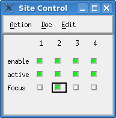

Site Control Window
To debug a multi-site testflow, you need to identify passing and failing sites and view the results of individual site in the result tools.
You do this with the Site Control window (the SmarTest Work Center menu ), which allows you
- to set the state of each site .
- to stimulate the behavior of the site setups, which is usually done by the prober/handler library.

The screenshot above shows the small version of the Site Control window. For the expanded view, refer to Expanded Site Control window.